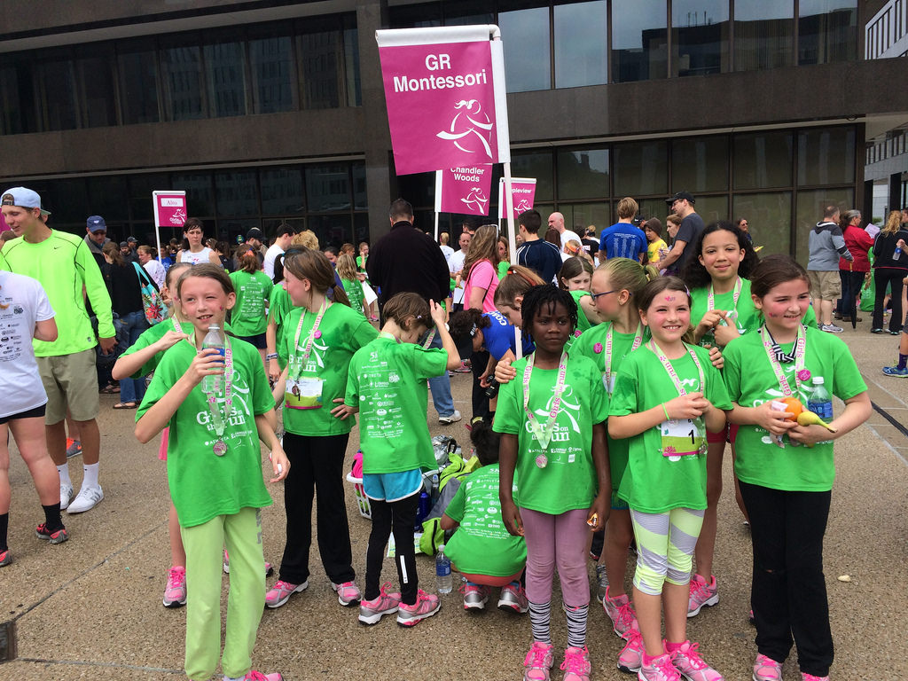
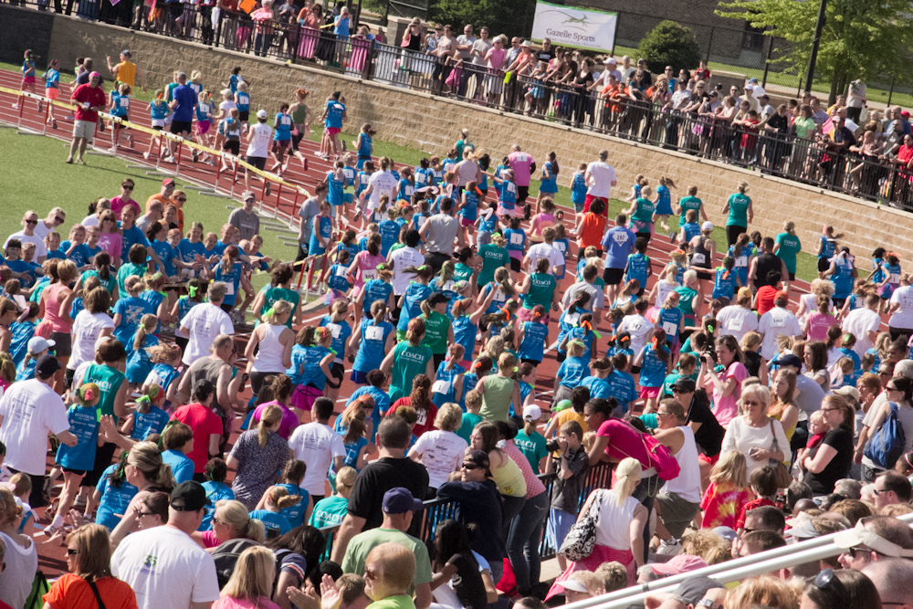
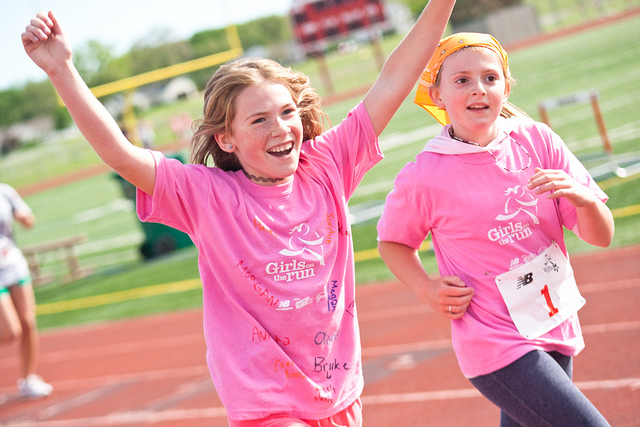
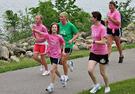
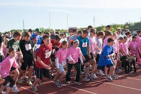

The Mission of Girls on the Run
Girls on the run is a program where young girls (ages 8-13 ) learn and grow. Girls learn to recognize their power and responsibility as young, growing women of society. Through running and building up their strength, they learn about their inner strength and values. All united, girls learn to embrace their differences and find deep down inside what makes them unique and special.
About Our Program
Ready, set, go! Through interactive activities, this non-profit organization guides girls through the early years. This program is not small, it is impactful on the hearts of young girls and will last them a lifetime. Girls on the Run teaches girls about self-respect and healthy lifestyles. Meeting twice a week in small teams, girls are taught life skill and involve themselves in interactive games as well as running. Girls on the Run is taught by certified coaches. Running is used to inspire, motivate, and encourage lifelong health and fitness.To the celebrate the end of the year, this program usually results in a 5k.
    Get Involved
This program is the perfect opportunity for girls to grow and embrace themselves! Make new friends and learn more about yourself. Memories your girls wil cherish for a lifetime. Sign up now!